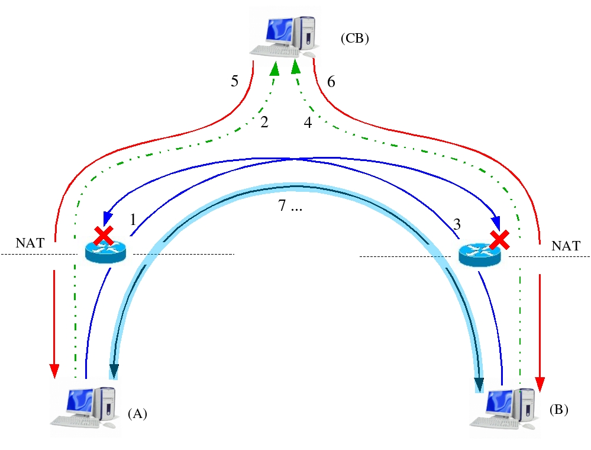
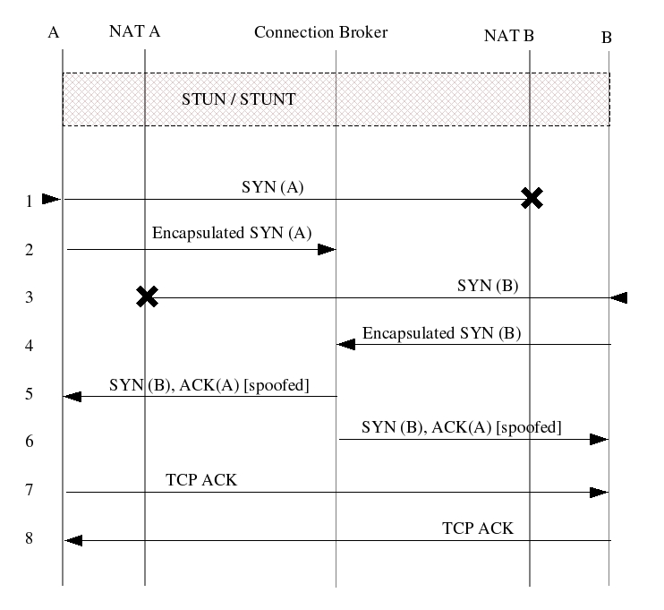

Next:
TCP Traversal with Spoofing
Up:
TCP NAT Traversal Protocol
Previous:
TCP NAT Traversal Protocol
Contents
TCP Traversal with Spoofing (NUTSS like)
Figure 6.1:
Figure 6.2:


Gaballo Luca 2005-06-30